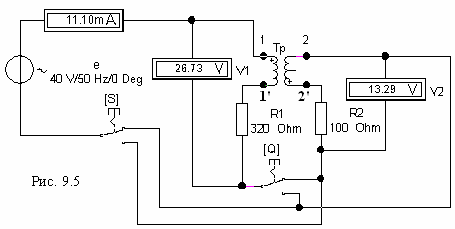

Задание 2. Исследовать последовательное соединение индуктивно связанных обмоток трансформатора. С этой целью:
- собрать схему (см. рис. 9.5) на рабочем поле программы EWB или на рабочем поле программы MS8 Education (либо открыть файл Lr9-2.ewb при выполнении работы в среде EWB или файл Lr9-2.ms8 при выполнении работы в среде MS8SD) последовательного соединения обмоток трансформатора и резисторов R1 0,2ХL1, Ом и R2 0,2ХL2, Ом, где ХL1 и ХL2 - рассчитанные значения индуктивных сопротивлений обмоток идеального трансформатора (см. табл. 1). Согласно варианту установить параметры элементов схемы.
Встречное включение обмоток получить с помощью ключей Q и S, устанавливая их соответственно в верхнее и нижнее положения и, тем самым, соединяя однополярные зажимы обмоток трансформатора, помеченные символом "+".

Результаты измерений занести в табл. 9.2.
Таблица 9.2
| Включение обмоток | Измерено | Рассчитано | |||||||
| I, мА | U, В | U1, В | U2, В | I, мА | U, В | U1, В | U2, В | М, Гн | |
| Согласное | |||||||||
| Встречное | |||||||||
При расчете тока I, напряжений U1 и U2 схемы рис. 9.2, а при согласном и встречном соединениях обмоток использовать вычисленные в задании 1 значения L1 и L2 и соотношения (9.1) при I1 = I2, U = U1+ U2, а при вычислении взаимной индуктивности М - соотношения (9.2) и (9.3). Сравнить вычисленное значение взаимной индуктивности М с значениями М табл. 9.1.
По результатам измерений и расчетов построить векторные диаграммы (рис. 9.5) напряжений и тока схемы рис. 9.2, в при согласном и встречном соединениях обмоток трансформатора.